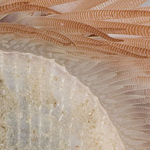
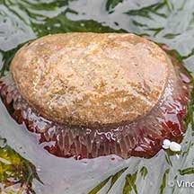
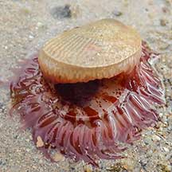
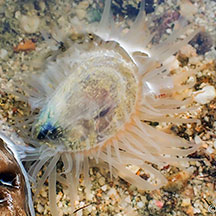
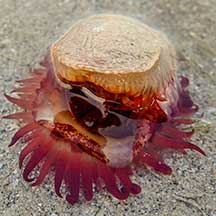
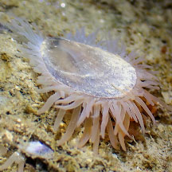
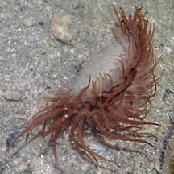
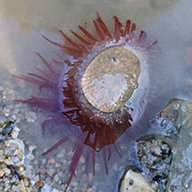
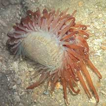
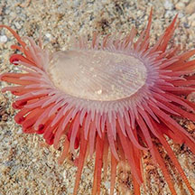

|
|
| bivalves text index | photo index |
| Phylum Mollusca > Class Bivalvia > Family Limidae |
| Swimming
file clam Limaria sp. Family Limidae updated May 2020 Where seen? This intriguing animals with fleshy tentacles are sometimes seen near living reefs, under corals and stones. Features: 4- 6cm. The two-part shell is thin, fine ridges, usually white or yellowish. The shell can't close completely and there is a permanently open gape. Tentacles very long, usually reddish with fine bars. Tentacles can't be retracted completely in the shell. These tentacles are sticky and can break off if the animal is distressed. The animal is quite active and can swim by 'clapping' its valves. |
 Terumbu Pempang Tengah, Jul 12 |
 Terumbu Pempang Tengah, Jul 12 |
 |

| Swimming file clams on Singapore shores |
On wildsingapore
flickr
|
| Other sightings on Singapore shores |
 Sentosa Tg Rimau, Nov 20 Photo shared by Vincent Choo on facebook. |
 Sentosa Serapong, Dec 20 Photo shared by Vincent Choo on facebook. |
 Pulau Tekukor, Jan 25 Photo shared by Vincent Choo on facebook. |
 Lazarus Island, Nov 20 Photo shared by Vincent Choo on facebook. |
 Lazarus Island, Jan 24 Photo shared by Jianlin Liu on facebook. |
 Kusu Island, Jul 20 Photo shared by Richard Kuah on facebook. |
 St John's Island, Oct 25 Photo shared by Che Cheng Neo on facebook. |
 Big Sisters Island, Feb 21 Photo shared by Joleen Chan on facebook. |
 |
| Terumbu Pempang Laut, Jul 20 |
|
Acknowlegement
References
|